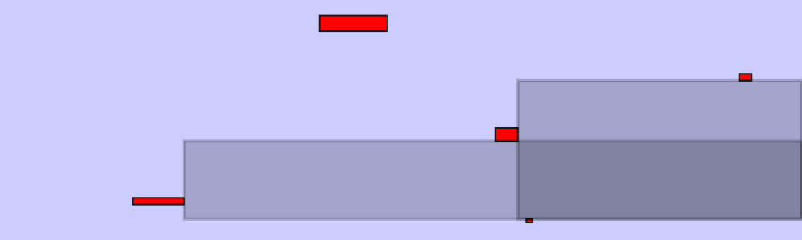
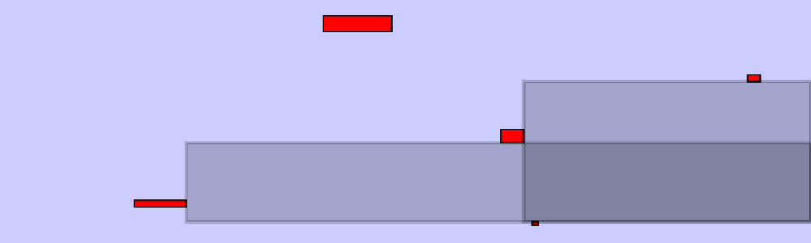
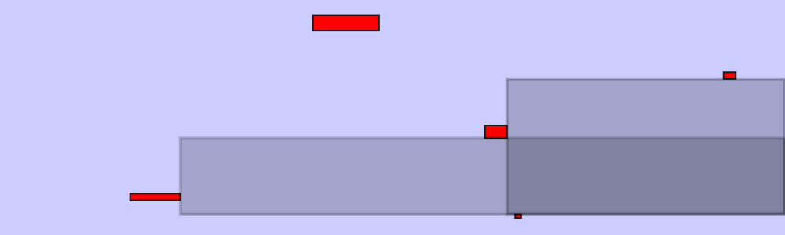

I have worked on two tasks:
Generating maximal candidates. Given a board with defects, the goal of this task is to enumerate all the maximal empty rectangles. A maximal empty rectangle (MER) is defined as a rectangle containing no defects and not included in any other defect-free rectangle. Both the board and the defects are represented as rectangles and the data is randomly generated (but we could also use the annotations from various datasets; e.g., Salum, Oulu).
Here is an example of a board (in blue) and defects (in red):
And here are candidate MERs of different types:
The code for this part is available here.
Optimizing the selection of candidates. The goal is to select the candidate rectangles such (i) the area they cover is maximized and (ii) any two rectangles do not overlap. To do this we want to optimize the following problem:
\[ \begin{aligned} \underset{\mathbf{x}}{\text{maximize}} \;\; & \mathbf{w}^\intercal\mathbf{x} \\ \text{subject to} \;\; & x_i \in \left\{0, 1\right\}, \forall i \\ & \mathbf{x}^\intercal \mathbf{A} \mathbf{x} = 0 \end{aligned} \]
where
To simplify the optimization problem, I modify it in two ways: (i) relax the problem to continuous domain; (ii) move the quadratic constraint into the objective function. The new optimization problem is:
\[ \begin{aligned} \underset{\mathbf{x}}{\text{maximize}} \;\; & \mathbf{w}^\intercal\mathbf{x} - \alpha \frac{1}{2} \mathbf{x}^\intercal \mathbf{A} \mathbf{x} \\ \text{subject to} \;\; & x \ge 0, \forall i\\ & \|\mathbf{x}\|_1 = 1 \end{aligned} \]
To solve this I’m using the cvxopt package from Python. However, currently I’m running into some numerical issues that I need to look into. The code for this part is available here.